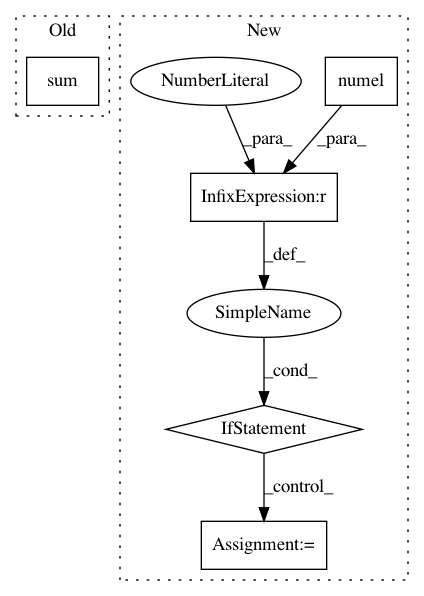

10f7e5ffaa583d09912e72e82353fe64814e7967,gpytorch/mlls/variational_elbo.py,VariationalELBO,forward,#VariationalELBO#Any#Any#,25
Before Change
log_likelihood = self.likelihood.variational_log_probability(variational_dist_f, target, **kwargs).div(
num_batch
)
kl_divergence = torch.distributions.kl.kl_divergence(variational_dist_u, prior_dist).sum().div(self.num_data)
if self.combine_terms:
res = log_likelihood - kl_divergence
After Change
kl_divergence = torch.distributions.kl.kl_divergence(variational_dist_u, prior_dist)
if log_likelihood.numel() == 1:
kl_divergence = kl_divergence.sum()
kl_divergence = kl_divergence.div(self.num_data)
if self.combine_terms:
res = log_likelihood - kl_divergence
In pattern: SUPERPATTERN
Frequency: 3
Non-data size: 5
Instances
Project Name: cornellius-gp/gpytorch
Commit Name: 10f7e5ffaa583d09912e72e82353fe64814e7967
Time: 2018-11-08
Author: gardner.jake@gmail.com
File Name: gpytorch/mlls/variational_elbo.py
Class Name: VariationalELBO
Method Name: forward
Project Name: cornellius-gp/gpytorch
Commit Name: 020d3d6dfa1bbcc13f7f7f0a833f57bb2cc8ef9d
Time: 2018-07-03
Author: balandat@fb.com
File Name: gpytorch/lazy/constant_mul_lazy_variable.py
Class Name: ConstantMulLazyVariable
Method Name: _quad_form_derivative
Project Name: BindsNET/bindsnet
Commit Name: dcc5890dc2773090ab46a5e8bdd981a1104d9273
Time: 2018-06-29
Author: djsaunde@umass.edu
File Name: bindsnet/evaluation/__init__.py
Class Name:
Method Name: ngram